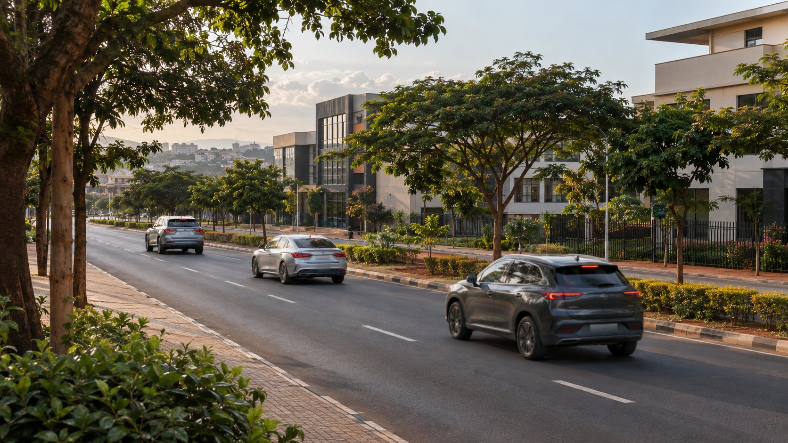
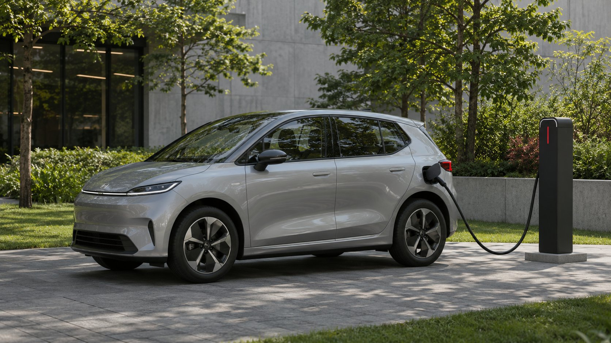
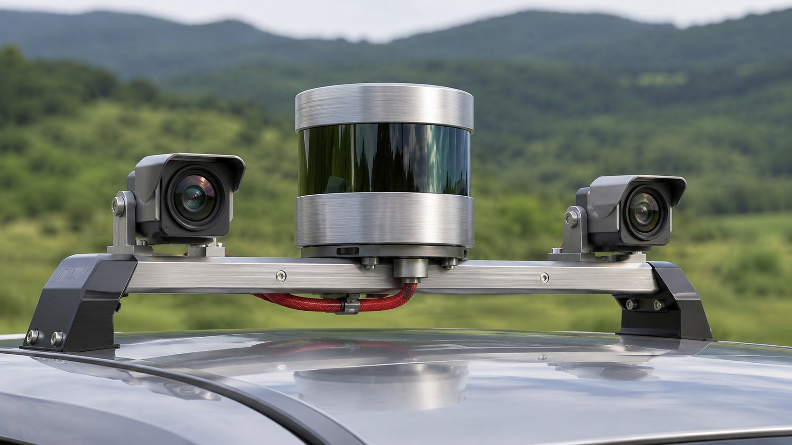

Fit and test
Bring the system onto test vehicles and begin trials in controlled conditions.
Kigali, Rwanda
Inuma Self-Driving Car · Research project
We’re researching a self-driving system that could adapt to different types of vehicles. It’s a long-term project, built around learning, careful testing, and steady progress.
The goal
Our question is simple: could one self-driving system work across different vehicles, instead of being designed for just one?
Answering it means bringing sensors, software, and vehicle controls together—and testing how they behave as a whole. There’s still a lot to learn before this could become a product.
Development roadmap
These are working targets, not promised launch dates. What we learn, along with safety testing, funding, and regulation, will shape the pace.
Bring the system onto test vehicles and begin trials in controlled conditions.
Refine the hardware, software, and installation process so the approach can be used again.
Broaden testing with trial vehicles and use the findings to guide improvements.
Explore a safe, practical path from research to personal autonomous transport.
Why it matters
Consistent road monitoring could reduce some mistakes behind the wheel. Careful testing is how we’ll find out where it helps.

Better use of traffic information could help vehicles plan routes and respond as road conditions change.

Pairing electric vehicles with thoughtful route planning could make journeys more efficient. We want to explore that potential.
The technical challenge
A vehicle needs to sense its surroundings, understand where it is, choose a route, and respond correctly. Getting any one part right isn’t enough. The challenge is making the whole system work reliably, including when conditions change.

Development principles
Design with different vehicles in mind, so we can learn what carries across and what needs to change.
Start in controlled conditions. Let the evidence guide when and how testing expands.
Use what the tests reveal to refine the system, then check those changes again.
Inuma Self-Driving Car
Working in vehicle technology, research, or testing? We’d like to hear where our work might meet.